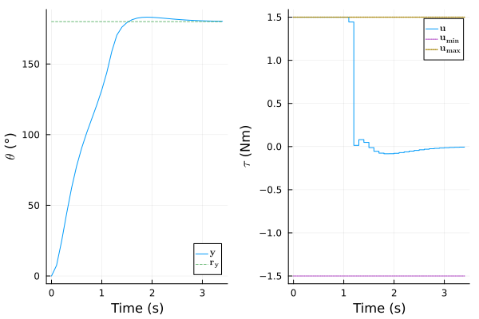
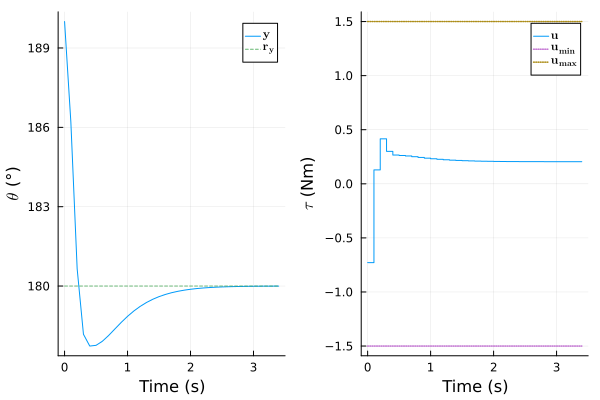

Manual: ModelingToolkit Integration
Pendulum Model
This example integrates the simple pendulum model of the last section in ModelingToolkit (MTK) framework and extracts appropriate f! and h! functions to construct a NonLinModel. An NonLinMPC is designed from this model and simulated to reproduce the results of the last section.
This simple example is not an official interface to ModelingToolkit.jl. It is provided as a basic starting template to combine both packages. There is no guarantee that it will work for all corner cases.
We first construct and instantiate the pendulum model:
using ModelPredictiveControl, ModelingToolkitusing ModelingToolkit: D_nounits as D, t_nounits as t@parameters g=9.8 L=0.4 K=1.2 m=0.3@variables θ(t)=0 ω(t)=0 τ(t)=0 y(t)eqs = [ D(θ) ~ ω D(ω) ~ -g/L*sin(θ) - K/m*ω + τ/m/L^2 y ~ θ * 180 / π]@named mtk_model = System(eqs, t)\[ \begin{align} \frac{\mathrm{d} ~ \theta\left( t \right)}{\mathrm{d}t} &= \omega\left( t \right) \\ \frac{\mathrm{d} ~ \omega\left( t \right)}{\mathrm{d}t} &= \frac{\tau\left( t \right)}{L^{2} ~ m} + \frac{ - K ~ \omega\left( t \right)}{m} + \frac{ - g ~ \sin\left( \theta\left( t \right) \right)}{L} \\ y\left( t \right) &= 57.296 ~ \theta\left( t \right) \end{align} \]
We than convert the MTK model to an input-output system:
function generate_f_h(model, inputs, outputs) (_, f_ip), x_sym, p_sym, io_sys = ModelingToolkit.generate_control_function( model, inputs, split=false, simplify=true ) if any(ModelingToolkit.is_alg_equation, equations(io_sys)) error("Systems with algebraic equations are not supported") end nu, nx, ny = length(inputs), length(x_sym), length(outputs) function f!(ẋ, x, u, _ , p) try f_ip(ẋ, x, u, p, nothing) catch err if err isa MethodError error("NonLinModel does not support a time argument t in the f function, "* "see the constructor docstring for a workaround.") else rethrow() end end return nothing end (_, h_ip) = ModelingToolkit.build_explicit_observed_function( io_sys, outputs; inputs, return_inplace = true ) u_nothing = fill(nothing, nu) function h!(y, x, _ , p) try # MTK.jl supports a `u` argument in `h_ip` function but not this package. We set # `u` as a vector of nothing and `h_ip` function will presumably throw an # MethodError if this argument is used inside the function h_ip(y, x, u_nothing, p, nothing) catch err if err isa MethodError error("NonLinModel only support strictly proper systems (no manipulated "* "input argument u in the output function h)") else rethrow() end end return nothing end ic = initial_conditions(io_sys) p_map = try Dict(sym => ic[sym] for sym in p_sym) catch err if err isa KeyError # the key presumably appears in `bindings(io_sys)`: error("Non-constant parameter values are not supported (a.k.a. bindings)") else rethrow() end end p = ModelingToolkit.varmap_to_vars(p_map, p_sym) return f!, h!, p, x_sym, p_sym, nu, nx, nyendinputs, outputs = [τ], [y]f!, h!, p, x_sym, p_sym, nu, nx, ny = generate_f_h(mtk_model, inputs, outputs)x_sym2-element Vector{SymbolicUtils.BasicSymbolicImpl.var"typeof(BasicSymbolicImpl)"{SymbolicUtils.SymReal}}:
ω(t)
θ(t)Since MTK is an acausal modeling framework, we do not have the control on the state realization chosen by the package. The content of x_sym above shows it settled for the state vector $\mathbf{x}(t) = [\begin{smallmatrix}ω(t) && θ(t)\end{smallmatrix}]'$, that is, the states of the last section in the reverse order. As the same also applies for the parameters, the p_sym object informs on how the p vector is sorted:
[p_sym p]4×2 Matrix{Any}:
K 1.2
m 0.3
L 0.4
g 9.8We can now construct a NonLinModel with this specific state realization:
vu, vx, vy = ["\$τ\$ (Nm)"], ["\$ω\$ (rad/s)", "\$θ\$ (rad)"], ["\$θ\$ (°)"]Ts = 0.1model = setname!(NonLinModel(f!, h!, Ts, nu, nx, ny; p); u=vu, x=vx, y=vy)NonLinModel with a sample time Ts = 0.1 s:
├ solver: RungeKutta(4)
├ jacobian: AutoForwardDiff
└ dimensions:
├ 1 manipulated inputs u
├ 2 states x
├ 1 outputs y
└ 0 measured disturbances dWe also instantiate a plant model with a 25 % larger friction coefficient $K$:
i_K = findfirst(==("K"), string.(p_sym))p2 = copy(p)p2[i_K] = 1.25*p[i_K]plant = setname!(NonLinModel(f!, h!, Ts, nu, nx, ny; p=p2), u=vu, x=vx, y=vy)NonLinModel with a sample time Ts = 0.1 s:
├ solver: RungeKutta(4)
├ jacobian: AutoForwardDiff
└ dimensions:
├ 1 manipulated inputs u
├ 2 states x
├ 1 outputs y
└ 0 measured disturbances dController Design
We can than reproduce the Kalman filter and the controller design of the last section by reversing the order of σQ vector, because of the different state realization:
α=0.01; σQ=[1.0, 0.1]; σR=[5.0]; nint_u=[1]; σQint_u=[0.1]estim = UnscentedKalmanFilter(model; α, σQ, σR, nint_u, σQint_u)Hp, Hc, Mwt, Nwt = 20, 2, [0.5], [2.5]nmpc = NonLinMPC(estim; Hp, Hc, Mwt, Nwt, Cwt=Inf)umin, umax = [-1.5], [+1.5]nmpc = setconstraint!(nmpc; umin, umax)NonLinMPC controller with a sample time Ts = 0.1 s:
├ estimator: UnscentedKalmanFilter
├ model: NonLinModel
├ optimizer: Ipopt
├ transcription: SingleShooting
├ gradient: AutoForwardDiff
├ jacobian: AutoForwardDiff
├ hessian: nothing
└ dimensions:
│ ├ 20 prediction steps Hp
│ ├ 2 control steps Hc
│ ├ 1 manipulated inputs u (1 integrating states)
│ ├ 3 estimated states x̂
│ ├ 1 measured outputs ym (0 integrating states)
│ ├ 0 unmeasured outputs yu
│ └ 0 measured disturbances d
└ optimization:
├ 2 decision variables Z̃ (0 slack variable, 0 bounds)
├ 40 linear inequality constraints A (0 custom)
├ 0 linear equality constraints Aeq
├ 0 nonlinear inequality constraints g (0 custom)
└ 0 nonlinear equality constraints geqThe 180° setpoint response is identical:
using PlotsN = 35res_ry = sim!(nmpc, N, [180.0], plant=plant, x_0=[0, 0], x̂_0=[0, 0, 0])plot(res_ry)
and also the output disturbance rejection:
res_yd = sim!(nmpc, N, [180.0], plant=plant, x_0=[0, π], x̂_0=[0, π, 0], y_step=[10])plot(res_yd)
Acknowledgement
Authored by 1-Bart-1 and baggepinnen, thanks for the contribution.